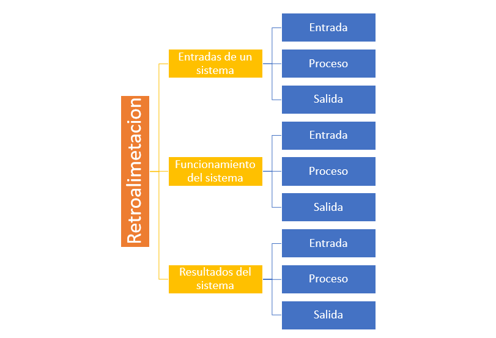

Principios aplicables en todos los campos de investigacion
elementos de la tgs:
Los elementos que componen un SISTEMA son entrada, salida, proceso, ambiente, retroalimentación.
¿Cuáles son las 3 premisas de la TGS?
1.Los sistemas, existen dentro de sistemas. Hay una jerarquía de sistemas: suprasistema, sistema y subsistema.
2.Los sistemas son abiertos. Es una consecuencia de la premisa anterior.
3.Las funciones de su sistema dependen de su estructura.

Característica de la tgs:
1.Interrelación e interdependencia de objetos, atributos, acontecimientos y otros aspectos similares.
2. Totalidad
3. Búsqueda de objetivos.
4. Insumos y productos
5. Transformación
6. Regulación
Sistemas
Un sistema se define como una entidad con límites y con partes interrelacionadas e interdependientes cuya suma es mayor a la suma de sus partes.
La TGS es un nuevo esfuerzo en la búsqueda de conceptos y leyes válidos para la descripción e interpretación de toda clase de sistemas reales o físicos.
descripcion del proposito:Usar los mismos términos y conceptos
Facilitar el desarrollo teórico en campos en los que es difícil la abstracción del objeto

Conceptucion de Proceso
Sistema:Es un conjunto de elemtos relacionados entre si que es funcional como un todo:
EJ: Sistema operativo: Un sistema operativo es un conjunto de programas propios de un sistema informatico que forman parte del software
Subsistemas:Es un sistema que hace parte de un sistema aun mayor
EJ:El subsistema "sistema digestibo" contiene en el sistema "cuerpo humano"
Niveles de organizacion:Se puede pensar, sobre la base de
la idea de recursividad(subsistema-sistemasupersistema) en una cadena que
vaya de lo más pequeño hasta lo más grande.
EJ:El subsistema "memoria RAM",contenido en el sistema "placa madre", contenido en el
supersistema "computadora
Sistema abierto:Los sistemas abiertos intercambian materia y energía regularmente con el medio
ambiente. Son eminentemente adaptativos, esto es, para sobrevivir deben reajustarse constantemente a las
condiciones del medio.
EJ:Un sistema abierto "mantiene así mismo, un continuo flujo de entrada y salida, un
mantenimiento y sustentación de los componentes.
Sistema Cerrado:Aquellos sistemas que tienen un comportamiento determinístico y programado, y que tienen un
intercambio de energía y materia muy pequeño con el ambiente.
EJ:No reciben ninguna influencia del ambiente, y por otro lado
tampoco influencian al ambiente.No reciben ningún recurso externo y nada producen la acepción exacta del término.
Corriente de Entrada:El funcionamiento de los
sistemas requiere importar ciertos ciertos recursos del medio.
EJ:Los sistemas, a través de su corriente de entrada, reciben la energía necesaria para su funcionamiento y manutención.
Procesos de Conversion:En informática, la conversión alude al proceso de transformación de datos
informáticos de una representación concreta a otra, cambiando los bits de un
formato de archivo formato a otro, normalmente para lograr la interoperabilidad de
aplicaciones o Sistemas diferentes.
1.Sistemas Paralelos
2.Conversión directa.
3.Enfoque piloto.
Corriente de Salida:La corriente de salida equivale a la "exportación" que el sistema hace al medio
EJ:Hemos señalado que la corriente de salida,o el producto que exportauna planta al medio, es el
oxígenoque ella fabrica a partir de la energíasolar
Sinergia
la sinergia es la integración de varios elementos que tienen diferentes cualidades y estos conforman el sistema o conllevan a un fin.
en la sinergia intervienen todos aquellos objetos que necesitan de otros para funcionar.
Tipos de sinergia
1.sinergia positiva:surge cuando los elementos que componen el sistema estan bien integrados entre si
2.sinergia negativa:surge cuando en un sistema se tiende a la desintegracion
3.sinergia neutra:cuando la interaccion no produce efectos multiplicadores de ningun tipo, ni positivos ni negativos
Recursividad
el hecho de que un sistema, este compuesto a su vez de objetos que también son sistemas.lo importante de esto es que cada uno de los objetos, no importando su tamaño, tiene propiedades que lo convierten en una totalidad.
Aplicacion:Se aplica a sistemas dentro de sistemas mayores y a ciertas características particulares más bien funciones o conductas propias de cada sistema que son semejantes a la de los sistemas mayores. No consiste en sumar partes aisladas sino integrar elementos que en si son una totalidad dentro de una totalidad.
Division:
1.Directa:es cuando tenemos un programa o subprograma y este termina y entonces esta se vuelve a llamar
2.Indirecta:el subprograma llama a otro subprograma y este llama al primero